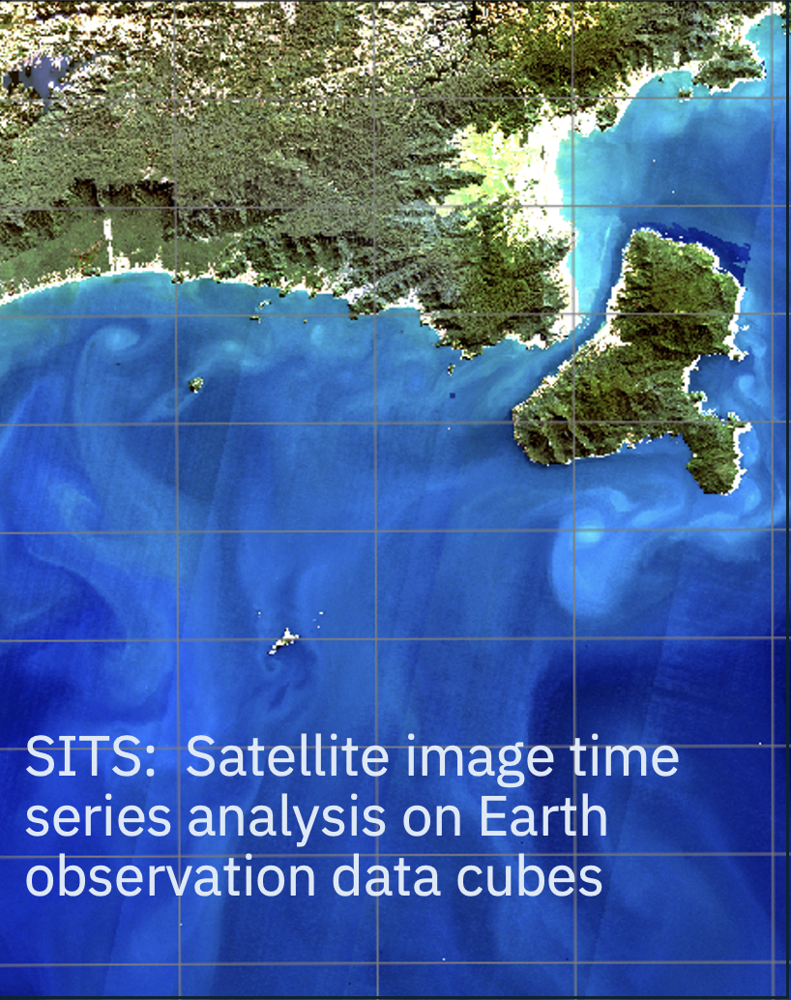

Satellite Image Time Series Analysis on Earth Observation Data Cubes
Greetings

Welcome to the age of big Earth observation data! With free access to massive data sets, we need new methods to measure change on our planet. This book will help you to use state-of-the-art tools to work with image time series. Time series are a powerful tool for monitoring change, providing insights and information that single snapshots cannot achieve. Combined with Earth observation data cube, time series analysis are a new and exciting paradigm. This book offers a comprehensive appraisal of this emerging discipline.
What is this book about?
This book introduces sits, an open-source R package for big Earth observation data analysis using satellite image time series. Users build regular data cubes from cloud services such as Amazon Web Services, Microsoft Planetary Computer, Copernicus Data Space Ecosystem, NASA Harmonized Landsat-Sentinel, Brazil Data Cube, Swiss Data Cube, Digital Earth Australia, and Digital Earth Africa. The sits API includes training sample quality measures, machine learning and deep learning classification algorithms, and Bayesian post-processing methods for smoothing and uncertainty assessment. To evaluate results, sits supports best-practice accuracy assessments. The authors also provide a Python API that interfaces with the R API, and thus allows Python users to directly run sits and convert its data structures to Python data.frames and xarrays.
How much R knowledge is required?
The sits package is designed for remote sensing experts in the Earth Sciences field who want to use advanced data analysis techniques with only basic programming knowledge. The package provides a clear and direct set of functions that are easy to learn and master. To quickly master what is needed to run sits, please read Parts 1 and 2 of Garrett Grolemund’s book, Hands-On Programming with R. Although not needed to run sits, your R skills will benefit from the book by Hadley Wickham and Gareth Grolemund, R for Data Science (2nd edition). Important concepts of spatial analysis are presented by Edzer Pebesma and Roger Bivand in their book Spatial Data Science.
How does one run SITS in Python?
From version 1.5.3 onwards, users can run sits in Python. Follow the instructions in the “Setup” chapter on how to set your Python environment to interface with R. Then follow the book examples provided for using sits in Python. The book provides code in both R and Python. Therefore, after correctly setting up their working environment, Python experts can run sits functions in their favorite tools, such as Jupyter Notebooks.
Software version described in this book
The version of the sits package described in this book is 1.5.3.
Main reference for sits
If you use sits in your work, please cite the following paper:
Rolf Simoes, Gilberto Camara, Gilberto Queiroz, Felipe Souza, Pedro R. Andrade, Lorena Santos, Alexandre Carvalho, and Karine Ferreira. Satellite Image Time Series Analysis for Big Earth Observation Data. Remote Sensing, 13, p. 2428, 2021.
Intellectual property rights
This book is licensed as Attribution-NonCommercial-ShareAlike 4.0 International (CC BY-NC-SA 4.0) by Creative Commons. The sits package is licensed under the GNU General Public License, version 3.0.